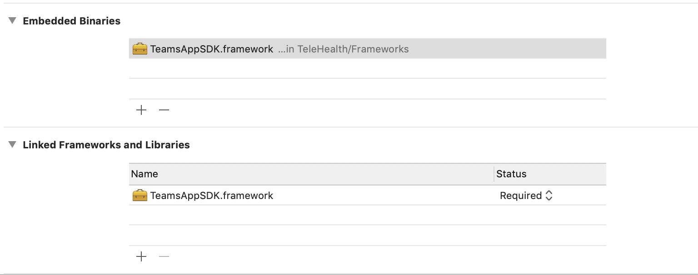
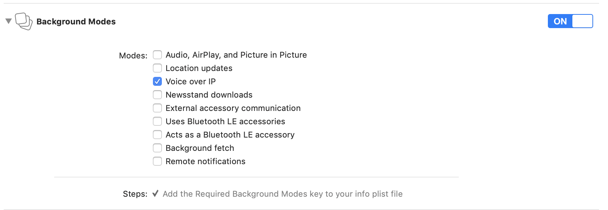
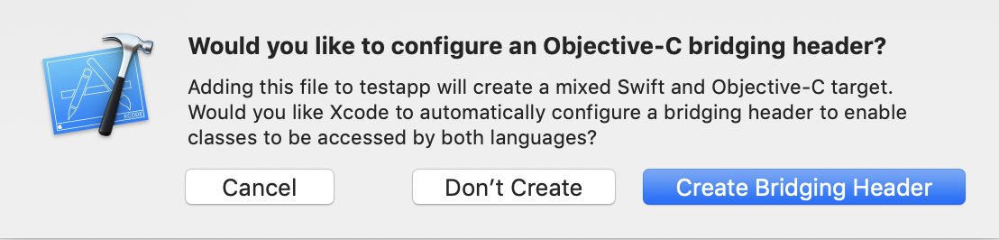

Getting Started with Microsoft Teams Mobile SDK
Prerequisite
- Xcode version: 10.2 or higher
- Swift version: Swift 4 or higher
- Deployment Target: 10 or higher
- Valid Architectures for devices: arm64, arm64e
Project Setup
Download Teams SDK Bundle and unarchive it. You will find TeamsAppSDK.framework for both simulator and device separately. Follow the below setps1. Copy TeamsAppSDK.framework folder into your application project folder.
2. Embed framework into your application.
- In your app’s Project Navigator, select your project. In the Editor pane, go to General tab -> Open Embedded Binaries.
- Click the + button to add a new framework. Click "Add Other" to navigate to where you just copied the TeamsAppSDK.framework. Add TeamsAppSDK.framework as an "Embedded Binary" (not a "Linked Framework").

- In the Project Navigator, select your project. In the Editor pane, go to Build Phases → Click on + sign → Create a New Run Script Phase
- Add the below script to it
#!/bin/sh
if [ -d "${TARGET_BUILD_DIR}"/"${PRODUCT_NAME}".app/Frameworks/TeamsAppSDK.framework/Frameworks ]; then
pushd "${TARGET_BUILD_DIR}"/"${PRODUCT_NAME}".app/Frameworks/TeamsAppSDK.framework/Frameworks
for EACH in *.framework; do
echo "-- signing ${EACH}"
/usr/bin/codesign --force --deep --sign "${EXPANDED_CODE_SIGN_IDENTITY}" --entitlements "${TARGET_TEMP_DIR}/${PRODUCT_NAME}.app.xcent" --timestamp=none $EACH
echo "-- moving ${EACH}"
mv -nv ${EACH} ../../
done
rm -rf "${TARGET_BUILD_DIR}"/"${PRODUCT_NAME}".app/Frameworks/TeamsAppSDK.framework/Frameworks
popd
echo "BUILD DIR ${TARGET_BUILD_DIR}"
fi
if [ -d "${TARGET_BUILD_DIR}"/"${PRODUCT_NAME}".app/Frameworks/TeamsAppSDK.framework/Frameworks ]; then
pushd "${TARGET_BUILD_DIR}"/"${PRODUCT_NAME}".app/Frameworks/TeamsAppSDK.framework/Frameworks
for EACH in *.framework; do
echo "-- signing ${EACH}"
/usr/bin/codesign --force --deep --sign "${EXPANDED_CODE_SIGN_IDENTITY}" --entitlements "${TARGET_TEMP_DIR}/${PRODUCT_NAME}.app.xcent" --timestamp=none $EACH
echo "-- moving ${EACH}"
mv -nv ${EACH} ../../
done
rm -rf "${TARGET_BUILD_DIR}"/"${PRODUCT_NAME}".app/Frameworks/TeamsAppSDK.framework/Frameworks
popd
echo "BUILD DIR ${TARGET_BUILD_DIR}"
fi
- Define and provide a usage description of all the system’s privacy-sensitive data accessed by the framework in Info.plist as below
- Privacy — Microphone Usage Description
- Privacy — Camera Usage Description
- Privacy — Bluetooth Peripheral Usage Description
- Privacy — Bluetooth Always Usage Description
- Select your app target and click Capabilities tab.
- Turn on the Keychain Sharing capability.
- Add com.microsoft.intune.mam to the keychain group.
- Select your app target and click Capabilities tab.
- Turn on Background Modes if not done so already and select checkbox for Voice over IP

- In the Project Navigator, select your project, go to the Editor pane, select Project -> Build Settings -> select All tab -> Build Options -> Enable Bitcode = NO
Xcode 11 Specific Steps
1. Set window object reference to AppDelegate If your AppDelegate does not contain a window reference, please add a window variable in your AppDelegateObject-c
@property (strong, nonatomic) UIWindow *window;
Swift
var window: UIWindow?
Preparation for App Store upload
1. Remove i386 and x86_64 architectures from the frameworks in case of archivingAdd i386 and x86_64 architectures removing script to Build Phases before the umbrella framework codesign phase in case you would like to Archive your application.
In the Project Navigator, select your project. In the Editor pane, go to Build Phases → Click on + sign → Create a New Run Script Phase
echo "Target architectures: $ARCHS"
APP_PATH="${TARGET_BUILD_DIR}/${WRAPPER_NAME}"
find "$APP_PATH" -name '*.framework' -type d | while read -r FRAMEWORK
do
FRAMEWORK_EXECUTABLE_NAME=$(defaults read "$FRAMEWORK/Info.plist" CFBundleExecutable)
FRAMEWORK_EXECUTABLE_PATH="$FRAMEWORK/$FRAMEWORK_EXECUTABLE_NAME"
echo "Executable is $FRAMEWORK_EXECUTABLE_PATH"
echo $(lipo -info "$FRAMEWORK_EXECUTABLE_PATH")
FRAMEWORK_TMP_PATH="$FRAMEWORK_EXECUTABLE_PATH-tmp"
# remove simulator's archs if location is not simulator's directory
case "${TARGET_BUILD_DIR}" in
*"iphonesimulator")
echo "No need to remove archs"
;;
*)
if $(lipo "$FRAMEWORK_EXECUTABLE_PATH" -verify_arch "i386") ; then
lipo -output "$FRAMEWORK_TMP_PATH" -remove "i386" "$FRAMEWORK_EXECUTABLE_PATH"
echo "i386 architecture removed"
rm "$FRAMEWORK_EXECUTABLE_PATH"
mv "$FRAMEWORK_TMP_PATH" "$FRAMEWORK_EXECUTABLE_PATH"
fi
if $(lipo "$FRAMEWORK_EXECUTABLE_PATH" -verify_arch "x86_64") ; then
lipo -output "$FRAMEWORK_TMP_PATH" -remove "x86_64" "$FRAMEWORK_EXECUTABLE_PATH"
echo "x86_64 architecture removed"
rm "$FRAMEWORK_EXECUTABLE_PATH"
mv "$FRAMEWORK_TMP_PATH" "$FRAMEWORK_EXECUTABLE_PATH"
fi
;;
esac
echo "Completed for executable $FRAMEWORK_EXECUTABLE_PATH"
echo $(lipo -info "$FRAMEWORK_EXECUTABLE_PATH")
done
APP_PATH="${TARGET_BUILD_DIR}/${WRAPPER_NAME}"
find "$APP_PATH" -name '*.framework' -type d | while read -r FRAMEWORK
do
FRAMEWORK_EXECUTABLE_NAME=$(defaults read "$FRAMEWORK/Info.plist" CFBundleExecutable)
FRAMEWORK_EXECUTABLE_PATH="$FRAMEWORK/$FRAMEWORK_EXECUTABLE_NAME"
echo "Executable is $FRAMEWORK_EXECUTABLE_PATH"
echo $(lipo -info "$FRAMEWORK_EXECUTABLE_PATH")
FRAMEWORK_TMP_PATH="$FRAMEWORK_EXECUTABLE_PATH-tmp"
# remove simulator's archs if location is not simulator's directory
case "${TARGET_BUILD_DIR}" in
*"iphonesimulator")
echo "No need to remove archs"
;;
*)
if $(lipo "$FRAMEWORK_EXECUTABLE_PATH" -verify_arch "i386") ; then
lipo -output "$FRAMEWORK_TMP_PATH" -remove "i386" "$FRAMEWORK_EXECUTABLE_PATH"
echo "i386 architecture removed"
rm "$FRAMEWORK_EXECUTABLE_PATH"
mv "$FRAMEWORK_TMP_PATH" "$FRAMEWORK_EXECUTABLE_PATH"
fi
if $(lipo "$FRAMEWORK_EXECUTABLE_PATH" -verify_arch "x86_64") ; then
lipo -output "$FRAMEWORK_TMP_PATH" -remove "x86_64" "$FRAMEWORK_EXECUTABLE_PATH"
echo "x86_64 architecture removed"
rm "$FRAMEWORK_EXECUTABLE_PATH"
mv "$FRAMEWORK_TMP_PATH" "$FRAMEWORK_EXECUTABLE_PATH"
fi
;;
esac
echo "Completed for executable $FRAMEWORK_EXECUTABLE_PATH"
echo $(lipo -info "$FRAMEWORK_EXECUTABLE_PATH")
done
Additional Steps for Swift Application
Here are the steps to import the SDK in a pure Swift application. To import the framework header in a pure Swift app, you need to update (or create) bridging header with SDK public and Foundation headers.
#import <Foundation/Foundation.h>
#import <TeamsAppSDK/TeamsAppSDKPublic.h>
If bridging header does not exist; Xcode also offers to create bridging header when you add an Objective-C file to an existing Swift app.
- Create a new empty Objective C file in your project.
- When Xcode offers to create a bridging header, Click on Create Bridging Header
 - Update newly created bridging heder file with below text. You can also delete empty Objective-C file as this is not needed for SDK.
#import <Foundation/Foundation.h> #import <TeamsAppSDK/TeamsAppSDKPublic.h>
Using Microsoft Teams SDK APIs to join a meeting
Object-c
Import the SDK libraries to your mobile app’s project#import <TeamsAppSDK/TeamsAppSDKPublic.h>[MicrosoftTeamsSDK.sharedInstance initialize];
[MicrosoftTeamsSDK.sharedInstance joinMeetingWith:meetingUrl participantName:name error:error];
Swift
Import the SDK libraries to your mobile app’s by updating the bridging header file#import <TeamsAppSDK/TeamsAppSDKPublic.h>MicrosoftTeamsSDK.sharedInstance()?.initialize();
MicrosoftTeamsSDK.sharedInstance()?.joinMeeting(with: urlString, participantName: participantName, error: &error);
Add localization support based on your app
The Microsoft Teams SDK supports over hundred strings and resources. The framework bundle contains Base and English languages. The rest of them are included in the Localizations.zip file included with the package.Add localizations to the SDK based on what your app supports:
- Determine what kind of localizations your application supports from the app Xcode Project > Info > Localizations list
- Unzip the Localizations.zip included with the package
- Copy the localization folders from the unzipped folder based on what your app supports to the root of the TeamsAppSDK.framework